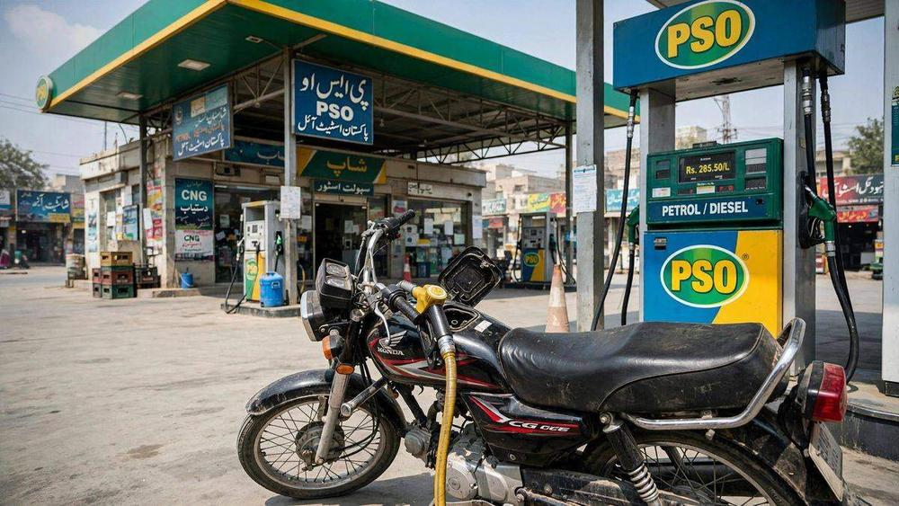

فیول ریلیف اسکیم: 1.18 کروڑ مستفیدین کی مکمل تفصیل

پاکستان میں پیٹرول کی بڑھتی قیمتوں نے عام آدمی کی زندگی مشکل کر رکھی ہے — خاص طور پر موٹرسائیکل اور رکشہ چلانے والے، جن کے لیے ایندھن روزگار کا براہِ راست خرچ ہے۔ اسی مسئلے کے حل کے لیے حکومت نے فیول ریلیف اسکیم شروع کی تھی، اور اب تازہ ترین سرکاری اعداد و شمار کے مطابق یہ اسکیم 1 کروڑ 18 لاکھ سے زائد موٹرسائیکل سواروں اور ڈرائیوروں تک پہنچ چکی ہے۔ اس مضمون میں اسکیم کی مکمل تفصیل، اہلیت، ٹوکن کی رقم اور تازہ ترین صورتحال بیان کی گئی ہے۔
اسکیم کیا ہے اور کیسے کام کرتی ہے؟
فیول ریلیف اسکیم حکومت کی ایک ڈیجیٹل سبسڈی اسکیم ہے جس کے تحت اہل گاڑیوں کے مالکان کو ایندھن کی خریداری پر رعایت دی جاتی ہے۔ یہ رعایت نقد رقم کی صورت میں نہیں، بلکہ ڈیجیٹل ٹوکن کی صورت میں ملتی ہے جو گاڑی کی تصدیق شدہ رجسٹریشن سے منسلک ہوتے ہیں۔
وزارت انفارمیشن ٹیکنالوجی و ٹیلی کمیونیکیشن کے مطابق 14 اکتوبر 2026 تک اسکیم میں 1 کروڑ 18 لاکھ 20 ہزار رجسٹریشنز ہو چکی تھیں اور 2 کروڑ 76 لاکھ 40 ہزار ٹوکن جاری کیے گئے، جن میں سے 2 کروڑ 52 لاکھ ٹوکن استعمال (ریڈیم) ہو چکے ہیں — یعنی استعمال کی شرح 91.18 فیصد رہی، جو کسی بھی سرکاری اسکیم کے لیے غیرمعمولی کامیابی ہے۔
کون اہل ہے اور کتنی رعایت ملتی ہے؟
اسکیم کا ہدف کم آمدنی والے موٹرسائیکل سوار اور چھوٹی گاڑیوں کے مالکان ہیں۔ اہلیت اور رعایت کی تفصیل یہ ہے:
- موٹرسائیکل اور تھری ویلر (رکشہ/چنگچی): فی ٹوکن 500 روپے کی رعایت، ٹوکن 7 دن کے لیے کارآمد۔
- 800 سی سی تک کی کاریں: فی ٹوکن 1,000 روپے کی رعایت، ٹوکن 10 دن کے لیے کارآمد۔
اعداد و شمار بتاتے ہیں کہ اسکیم کے 1 کروڑ 14 لاکھ 10 ہزار مستفیدین دو پہیہ یا تین پہیہ گاڑیوں کے مالکان ہیں، جبکہ تقریباً 4 لاکھ 12 ہزار چھوٹی کاروں کے مالکان بھی اس سے فائدہ اٹھا رہے ہیں۔ مجموعی طور پر 1 کروڑ 17 لاکھ 10 ہزار منفرد صارفین رجسٹرڈ ہیں، جن میں سے ایک بڑی تعداد بار بار ٹوکن حاصل کر رہی ہے — واپس آنے والے مستفیدین کو اب تک 1 کروڑ 59 لاکھ 30 ہزار ٹوکن جاری ہو چکے ہیں۔
وزیراعظم کا اعلان: اسکیم جاری رہے گی
10 اکتوبر 2026 کو وزیراعظم محمد شہباز شریف نے اسکیم کی کامیابی پر وفاقی و صوبائی حکومتوں اور متعلقہ اداروں کی کوششوں کو سراہا۔ انہوں نے اعلان کیا کہ اسکیم جاری رہے گی کیونکہ حکومت نے اس کے لیے 75 ارب روپے مختص کیے ہیں۔
وزیراعظم کے مطابق براہِ راست مستفیدین کی تعداد 1 کروڑ سے تجاوز کر چکی ہے — ان میں موٹرسائیکل سوار، رکشہ اور چنگچی چلانے والے، اور 800 سی سی تک کی گاڑیوں کے مالکان شامل ہیں۔ ان کا کہنا تھا کہ اوسط گھرانے کے 5 افراد کے حساب سے تقریباً 5 کروڑ افراد اس اسکیم سے بالواسطہ یا بلاواسطہ مستفید ہو رہے ہیں۔
اس موقع پر وزیراعظم نے اسکیم کی شفاف تنفیذ میں نمایاں کردار پر وفاقی وزیر انفارمیشن ٹیکنالوجی شازہ فاطمہ خواجہ کے لیے قومی ایوارڈ کا بھی اعلان کیا۔
پیٹرول پمپوں کو ادائیگیاں اور شکایات کا ازالہ
اسکیم صرف صارفین تک محدود نہیں — اس سے منسلک پیٹرول پمپوں کو بھی بروقت ادائیگیاں کی جا رہی ہیں۔ 12 اکتوبر تک حکومت 2 لاکھ 14 ہزار دعوؤں کے عوض پیٹرول اسٹیشنوں کو تقریباً 12 ارب 34 کروڑ روپے ادا کر چکی ہے، جبکہ مزید ادائیگیاں زیرِ کارروائی ہیں۔
شکایات کے ازالے کے لیے قائم خصوصی ہاٹ لائنز نے 25 ستمبر سے 13 اکتوبر کے دوران ہزاروں شکایات نمٹائیں — موٹرسائیکل سواروں کی شکایات کا 96 فیصد اور پیٹرول پمپ آپریٹرز کی شکایات کا 98 فیصد ازالہ کیا گیا۔
سینٹ میں بریفنگ: 9 ہزار سے زائد پمپ شریک
12 اکتوبر 2026 کو سینیٹ کی قائمہ کمیٹی برائے پیٹرولیم کو بریفنگ میں بتایا گیا کہ تقریباً 97 سو پیٹرول پمپ صارفین کو اسکیم کے تحت سہولت فراہم کر رہے ہیں۔ کمیٹی کے چیئرمین سینیٹر منظور احمد نے نئی کھیپ آنے اور وافر ذخائر کے باوجود پیٹرولیم قیمتوں میں محدود کمی پر تشویش کا اظہار بھی کیا۔
خلاصہ
فیول ریلیف اسکیم اس وقت پاکستان کی سب سے بڑی ڈیجیٹل سبسڈی اسکیم بن چکی ہے: 1.18 کروڑ رجسٹریشنز، 91 فیصد سے زائد ٹوکن کے استعمال کی شرح، اور 75 ارب روپے کی مختص رقم کے ساتھ اس کا تسلسل یقینی ہے۔ اگر آپ موٹرسائیکل، رکشہ یا 800 سی سی تک کی گاڑی کے مالک ہیں اور ابھی رجسٹرڈ نہیں، تو یہ سہولت آپ کے لیے ہے۔
ذرائع: ڈیلی صباح، ایکسپریس ٹریبیون، ٹیک جوائس، پاکستان ٹوڈے (اکتوبر 2026)